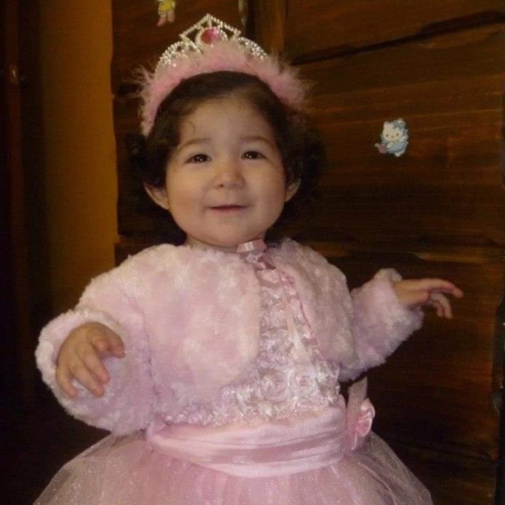
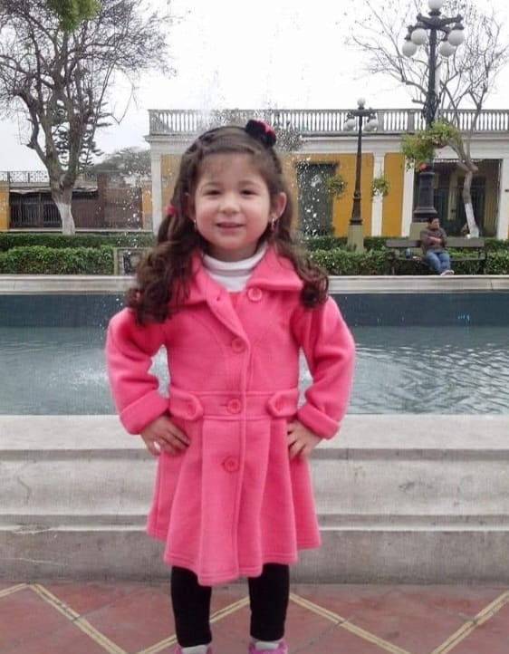
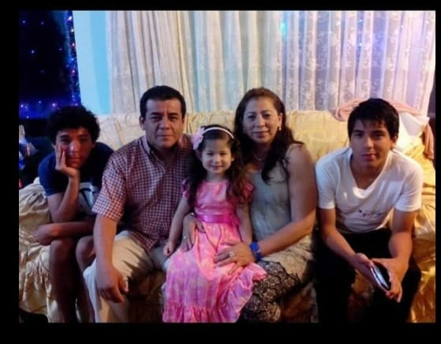
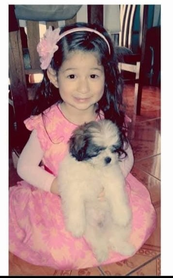
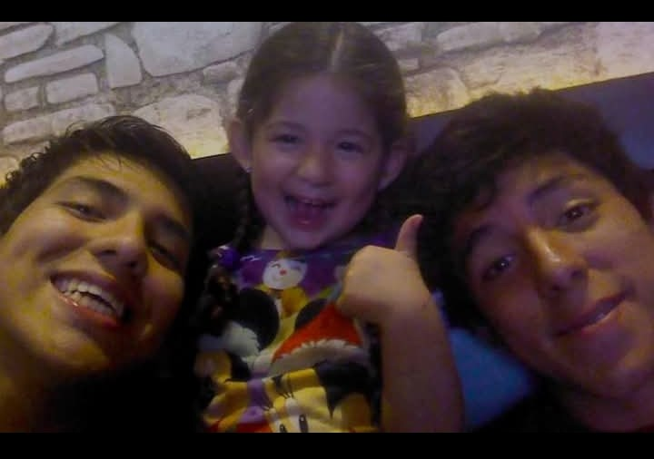

Mis 15 Años
Griana Checa
"Heredar los sueños, el paso del tiempo y el corazón de la gente... Mientras las personas busquen la verdadera libertad, ¡esta gran aventura nunca se detendrá! Te invito a celebrar junto a mí el viaje más hermoso de mi vida."




